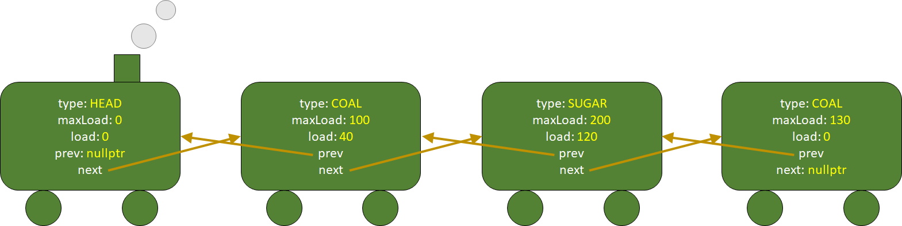

Choo-choo! All aboard! Yes, this assignment is about trains. You will model them with doubly-linked lists and implement various functions which manipulate them. You will practice dynamic memory usage, pointers, and linked lists. It is challenging, so you are highly recommended to start early. If you need clarification of the requirements, please feel free to post on the Piazza. However, to avoid cluttering the forum with repeated/trivial questions, please do read all the given code, webpage description, sample output, and latest FAQ (refresh this page regularly) carefully before you post your questions. Also please be reminded that we won't debug any student's assignment for the sake of fairness.
We value academic integrity very highly. Please read the Honor Code section on our course webpage to make sure you understand what is considered as plagiarism and what the penalties are. The following are some of the highlights:
Download the starting skeleton code HERE. Please download, unzip it, and add all the extracted files to your IDE now, as we will refer to the given source code from time to time in the description below. Your task is to complete 11 functions in todo.cpp, and submit it to ZINC.
Note that this is a C++ program that consists of multiple source files, therefore you should compile all those cpp files according to what you have learned in the labs/lectures.
Here are some rules that you should follow:
There is no demo program for this assignment as everything should already be well-defined and sufficiently described. Instead we have provided you with many examples and test cases and their corresponding outputs for you to check your understanding and program. You may find the test cases about them in the sample output section.
We use a doubly-linked list to represent a train. For that, a node struct is defined in pa3.h:
struct TrainCar //a node in the doubly-linked list that represents the train - it is therefore a car in the train
{
CarType type;
int maxLoad; //maximum possible load of cargo for this car; always 0 for HEAD
int load; //current load of cargo for this car; always 0 for HEAD
TrainCar* prev; //previous pointer
TrainCar* next; //next pointer
};
The CarType is defined as follows.
enum CarType {HEAD, OIL, COAL, WOOD, STEEL, SUGAR}; //either HEAD for the train head or the type of the cargo the train car can carry
Our train always has exactly one HEAD car at the beginning of the list, and then possibly followed by cargo cars which can either carry OIL, COAL, WOOD, STEEL, or SUGAR.
For example, here is an illustration of a train of 4 train cars which is represented by a doubly-linked list of 4 nodes:
(p.s. unfortunately not all programmers are artists... please use your imagination to imagine that it is a beautiful train! :))
The printTrain function, which prints the given train, is given to you. You can read its implementation in the given.cpp file. For the example given above, the output would be as follows (2 lines):
[HEAD] -> [COAL:40/100] -> [SUGAR:120/200] -> [COAL:0/130]
In reverse: [COAL:0/130] <- [SUGAR:120/200] <- [COAL:40/100] <- [HEAD]
The first line shows the train printed from the head node to the last node, while the second line shows the same train printed from the last node to the head node. You are expected to read the given code to understand how that is printed. We will be using this simple text representation in the rest of this assignment description.
Tip: if your program can print the first line but not the second line (the reverse printing of the train), it probably means that some of the prev pointers in your doubly-linked list is not properly set.
Also, in the description below, "position" of a car/node refers to the position of it in the linked list (counting from 0, starts at HEAD). For the example above, the "[HEAD]" node is at position 0, the [COAL:40/100]" node is at position 1, the "[SUGAR:120/200]" node is at position 2, and the "[COAL:0/130]" node is at position 3.
This section describes the functions that you need to implement for this assignment in todo.cpp. While we try to be as detailed as possible in the following description, you should check the given test cases in main and the corresponding sample output to verify your understanding, especially if you cannot understand the requirements completely just by reading the webpage description alone.
TrainCar* createTrainHead();bool addCar(TrainCar* head, int position, CarType cargoType, int maxLoad);cargoType with 0 current load and the specified maxLoad to an existing train headed by the specified head at the specified position (refer to the following examples to see how the position is used). It should return true if the addition is successful. The addition only fails when the given cargoType is HEAD because we would never add a train head with this function, or the given position is not larger than 0 because we won't be adding a new car before the train head, or the given position is larger than the length of the train (see examples below), or the given maxLoad is zero or negative. When it fails, do nothing to the train and simply return false.head parameter given always points to a valid train head node of a valid existing train in all our test cases.
Example 1:
train (which will be passed to the function as parameter head):
[HEAD]
In reverse: [HEAD]
addCar(train, 1, OIL, 100) which returns true:
[HEAD] -> [OIL:0/100]
In reverse: [OIL:0/100] <- [HEAD]
Example 2:
train:
[HEAD] -> [OIL:0/100]
In reverse: [OIL:0/100] <- [HEAD]
addCar(train, 0, SUGAR, 200) should simply return false.addCar(train, 3, SUGAR, 200) should simply return false. (length of the train is 2, and 3 is larger than that)addCar(train, 1, SUGAR, 0) should simply return false.addCar(train, 1, SUGAR, 200) which returns true:
[HEAD] -> [SUGAR:0/200] -> [OIL:0/100]
In reverse: [OIL:0/100] <- [SUGAR:0/200] <- [HEAD]
Example 3:
train:
[HEAD] -> [OIL:0/100]
In reverse: [OIL:0/100] <- [HEAD]
addCar(train, 2, SUGAR, 200) which returns true:
[HEAD] -> [OIL:0/100] -> [SUGAR:0/200]
In reverse: [SUGAR:0/200] <- [OIL:0/100] <- [HEAD]
bool deleteCar(TrainCar* head, int position);position. It should return true if the deletion is successful. The deletion only fails when the given position is invalid (less than 1 or not smaller than the car length, see examples below). When it fails, do nothing to the train and simply return false.Example 1:
train:
[HEAD] -> [OIL:0/100] -> [SUGAR:0/200]
In reverse: [SUGAR:0/200] <- [OIL:0/100] <- [HEAD]
deleteCar(train, 0) should simply return false. We won't delete the train head with this function.deleteCar(train, 3) should simply return false. The length of the train is 3, so there is no node to delete at position 3.deleteCar(train, 1) which returns true:
[HEAD] -> [SUGAR:0/200]
In reverse: [SUGAR:0/200] <- [HEAD]
Example 2:
train:
[HEAD] -> [OIL:0/100] -> [SUGAR:0/200]
In reverse: [SUGAR:0/200] <- [OIL:0/100] <- [HEAD]
deleteCar(train, 2) which returns true:
[HEAD] -> [OIL:0/100]
In reverse: [OIL:0/100] <- [HEAD]
bool swapCar(TrainCar* head, int a, int b);a and b. It should return true if the swap is successful. The swap only fails when any of the given positions is invalid, just like the deleteCar function. When it fails, do nothing to the train and simply return false.
a is the same as b as long as they are valid positions, although the train won't apparently change.Example 1:
train:
[HEAD] -> [OIL:0/100] -> [SUGAR:0/200]
In reverse: [SUGAR:0/200] <- [OIL:0/100] <- [HEAD]
swapCar(train, 0, 1) should simply return false.swapCar(train, 1, 3) should simply return false.swapCar(train, 1, 2) which returns true:
[HEAD] -> [SUGAR:0/200] -> [OIL:0/100]
In reverse: [OIL:0/100] <- [SUGAR:0/200] <- [HEAD]
swapCar(train, 2, 1) would have the same effect.
void sortTrain(TrainCar* head, bool ascending);ascending is true or descendingly if ascending is false. The train head should not be included in the sorting as the train head must always be at position 0.Example 1:
train:
[HEAD] -> [SUGAR:30/400] -> [OIL:10/100] -> [COAL:40/200] -> [STEEL:20/300] -> [COAL:5/500]
In reverse: [COAL:5/500] <- [STEEL:20/300] <- [COAL:40/200] <- [OIL:10/100] <- [SUGAR:30/400] <- [HEAD]
sortTrain(train, true):
[HEAD] -> [COAL:5/500] -> [OIL:10/100] -> [STEEL:20/300] -> [SUGAR:30/400] -> [COAL:40/200]
In reverse: [COAL:40/200] <- [SUGAR:30/400] <- [STEEL:20/300] <- [OIL:10/100] <- [COAL:5/500] <- [HEAD]
sortTrain(train, false):
[HEAD] -> [COAL:40/200] -> [SUGAR:30/400] -> [STEEL:20/300] -> [OIL:10/100] -> [COAL:5/500]
In reverse: [COAL:5/500] <- [OIL:10/100] <- [STEEL:20/300] <- [SUGAR:30/400] <- [COAL:40/200] <- [HEAD]
bool load(TrainCar* head, CarType type, int amount);amount of cargo of the specified type for the train (i.e. add new cargo to the train). It should return true if the loading is successful. The loading only fails if there is not enough free space for the specified cargo type in the train. When it fails, do nothing to the train and simply return false. When there are multiple cars of that cargo type, the loading always tries to fill the cargo cars that are closer to the train head first. Refer to the examples below.amount is always positive and the type won't be HEAD. (i.e. no checking of those parameters is needed) Example 1:
train:
[HEAD] -> [SUGAR:30/400] -> [OIL:10/100] -> [COAL:40/200] -> [STEEL:20/300] -> [COAL:5/500]
In reverse: [COAL:5/500] <- [STEEL:20/300] <- [COAL:40/200] <- [OIL:10/100] <- [SUGAR:30/400] <- [HEAD]
load(train, WOOD, 1) should simply return false because the train doesn't even have any WOOD cargo car.load(train, SUGAR, 380) should simply return false because the train can only carry at most 370 additional units of SUGAR.load(train, SUGAR, 300) which returns true:
[HEAD] -> [SUGAR:330/400] -> [OIL:10/100] -> [COAL:40/200] -> [STEEL:20/300] -> [COAL:5/500]
In reverse: [COAL:5/500] <- [STEEL:20/300] <- [COAL:40/200] <- [OIL:10/100] <- [SUGAR:330/400] <- [HEAD]
Example 2:
train:
[HEAD] -> [SUGAR:30/400] -> [OIL:10/100] -> [COAL:40/200] -> [STEEL:20/300] -> [COAL:5/500]
In reverse: [COAL:5/500] <- [STEEL:20/300] <- [COAL:40/200] <- [OIL:10/100] <- [SUGAR:30/400] <- [HEAD]
load(train, COAL, 510) which returns true:
[HEAD] -> [SUGAR:30/400] -> [OIL:10/100] -> [COAL:200/200] -> [STEEL:20/300] -> [COAL:355/500]
In reverse: [COAL:355/500] <- [STEEL:20/300] <- [COAL:200/200] <- [OIL:10/100] <- [SUGAR:30/400] <- [HEAD]
bool unload(TrainCar* head, CarType type, int amount);amount of cargo of the specified type for the train (i.e. remove cargo from the train). It should return true if the unloading is successful. The unloading only fails if there is not enough cargo to remove for the specified cargo type in the train. When it fails, do nothing to the train and simply return false. When there are multiple cars of that cargo type, the unloading always tries to unload the cargo cars that are closer to the train tail first. Refer to the examples below.amount is always positive and the type won't be HEAD.Example 1:
train:
[HEAD] -> [SUGAR:30/400] -> [OIL:10/100] -> [COAL:40/200] -> [STEEL:20/300] -> [COAL:5/500]
In reverse: [COAL:5/500] <- [STEEL:20/300] <- [COAL:40/200] <- [OIL:10/100] <- [SUGAR:30/400] <- [HEAD]
unload(train, WOOD, 1) should simply return false because the train doesn't even have any WOOD cargo car.unload(train, SUGAR, 31) should simply return false because the train only has 30 units of SUGAR.unload(train, SUGAR, 29) which returns true:
[HEAD] -> [SUGAR:1/400] -> [OIL:10/100] -> [COAL:40/200] -> [STEEL:20/300] -> [COAL:5/500]
In reverse: [COAL:5/500] <- [STEEL:20/300] <- [COAL:40/200] <- [OIL:10/100] <- [SUGAR:1/400] <- [HEAD]
Example 2:
train:
[HEAD] -> [SUGAR:30/400] -> [OIL:10/100] -> [COAL:40/200] -> [STEEL:20/300] -> [COAL:5/500]
In reverse: [COAL:5/500] <- [STEEL:20/300] <- [COAL:40/200] <- [OIL:10/100] <- [SUGAR:30/400] <- [HEAD]
unload(train, COAL, 15) which returns true:
[HEAD] -> [SUGAR:30/400] -> [OIL:10/100] -> [COAL:30/200] -> [STEEL:20/300] -> [COAL:0/500]
In reverse: [COAL:0/500] <- [STEEL:20/300] <- [COAL:30/200] <- [OIL:10/100] <- [SUGAR:30/400] <- [HEAD]
void printCargoStats(const TrainCar* head);Example 1:
train:
[HEAD] -> [SUGAR:30/400] -> [OIL:10/100] -> [COAL:40/200] -> [STEEL:0/300] -> [COAL:5/500]
In reverse: [COAL:5/500] <- [STEEL:0/300] <- [COAL:40/200] <- [OIL:10/100] <- [SUGAR:30/400] <- [HEAD]
printCargoStats(train) should print the following line to the console terminal with cout:
SUGAR:30/400,OIL:10/100,COAL:45/700,STEEL:0/300
endl at the end of the line.
void divide(const TrainCar* head, TrainCar* results[CARGO_TYPE_COUNT]);Example 1:
train:
[HEAD] -> [SUGAR:30/400] -> [OIL:10/100] -> [COAL:40/200] -> [STEEL:0/300] -> [COAL:5/500]
In reverse: [COAL:5/500] <- [STEEL:0/300] <- [COAL:40/200] <- [OIL:10/100] <- [SUGAR:30/400] <- [HEAD]
divide(train, results) will perform the following:
[HEAD] -> [SUGAR:30/400]
In reverse: [SUGAR:30/400] <- [HEAD]
[HEAD] -> [OIL:10/100]
In reverse: [OIL:10/100] <- [HEAD]
[HEAD] -> [COAL:40/200] -> [COAL:5/500]
In reverse: [COAL:5/500] <- [COAL:40/200] <- [HEAD]
[HEAD] -> [STEEL:0/300]
In reverse: [STEEL:0/300] <- [HEAD]
cout << "Divide results:" << endl;
for(int i=0; i<CARGO_TYPE_COUNT; i++)
{
cout << "results[" << i << "]:" << endl;
if(results[i] == nullptr)
cout << "nullptr" << endl;
else
printTrain(results[i]);
}
Divide results:
results[0]:
[HEAD] -> [SUGAR:30/400]
In reverse: [SUGAR:30/400] <- [HEAD]
results[1]:
[HEAD] -> [OIL:10/100]
In reverse: [OIL:10/100] <- [HEAD]
results[2]:
[HEAD] -> [COAL:40/200] -> [COAL:5/500]
In reverse: [COAL:5/500] <- [COAL:40/200] <- [HEAD]
results[3]:
[HEAD] -> [STEEL:0/300]
In reverse: [STEEL:0/300] <- [HEAD]
results[4]:
nullptr
TrainCar* optimizeForMaximumPossibleCargos(const TrainCar* head, int upperBound);upperBound, then create a new train with those cargo cars and return it. The cars in the returned train must be dynamically created. (i.e. in the returned train, do not just put/point to any existing cars of the given train - you need to create new copies of the cars) The original train should not be modified. We will use the following examples to explain what you need to do.
Example 1:
train:
[HEAD] -> [SUGAR:30/400] -> [COAL:10/100] -> [COAL:25/200]
In reverse: [COAL:25/200] <- [COAL:10/100] <- [SUGAR:30/400] <- [HEAD]
[HEAD] -> [SUGAR:30/400] -> [COAL:10/100] -> [COAL:25/200]
In reverse: [COAL:25/200] <- [COAL:10/100] <- [SUGAR:30/400] <- [HEAD]
[HEAD] -> [SUGAR:30/400] -> [COAL:10/100]
In reverse: [COAL:10/100] <- [SUGAR:30/400] <- [HEAD]
[HEAD] -> [SUGAR:30/400] -> [COAL:25/200]
In reverse: [COAL:25/200] <- [SUGAR:30/400] <- [HEAD]
[HEAD] -> [COAL:10/100] -> [COAL:25/200]
In reverse: [COAL:25/200] <- [COAL:10/100] <- [HEAD]
[HEAD] -> [SUGAR:30/400]
In reverse: [SUGAR:30/400] <- [HEAD]
[HEAD] -> [COAL:10/100]
In reverse: [COAL:10/100] <- [HEAD]
[HEAD] -> [COAL:25/200]
In reverse: [COAL:25/200] <- [HEAD]
[HEAD]
In reverse: [HEAD]
optimizeForMaximumPossibleCargos(train, 100) should create and return a new train:
[HEAD] -> [SUGAR:30/400] -> [COAL:10/100] -> [COAL:25/200]
In reverse: [COAL:25/200] <- [COAL:10/100] <- [SUGAR:30/400] <- [HEAD]
optimizeForMaximumPossibleCargos(train, 35) should create and return a new train:
[HEAD] -> [COAL:10/100] -> [COAL:25/200]
In reverse: [COAL:25/200] <- [COAL:10/100] <- [HEAD]
optimizeForMaximumPossibleCargos(train, 36) should create and return a new train:
[HEAD] -> [COAL:10/100] -> [COAL:25/200]
In reverse: [COAL:25/200] <- [COAL:10/100] <- [HEAD]
optimizeForMaximumPossibleCargos(train, 40) should create and return a new train:
[HEAD] -> [SUGAR:30/400] -> [COAL:10/100]
In reverse: [COAL:10/100] <- [SUGAR:30/400] <- [HEAD]
optimizeForMaximumPossibleCargos(train, 5) should create and return a new train:
[HEAD]
In reverse: [HEAD]
void deallocateTrain(TrainCar* head);Tip: If this function is crashing your program for all the test cases on ZINC, you may consider leaving its implementation empty so that you can get the majority of points from test cases that don't check for memory leak.
Your finished program should produce the same output as our sample output for the test cases. User input, if any, is omitted in the files. You can run them locally or run them online on ZINC anytime. Please note that sample output, naturally, does not show all possible cases. It is part of the assessment for you to design your own test cases to test your program. Be reminded to remove any debugging message that you might have added before submitting your final submission.
There are 22 given test cases of which the code can be found in the given main function. These 22 test cases are first run without any memory leak checking (they are numbered #1 - #22 on ZINC). Then, the same 22 test cases will be run again, in the same order, with memory leak checking (those will be numbered #23 - #44 on ZINC). For example, test case #24 on ZINC is actually the given test case 2 (in the given main function) run with memory leak checking.
Each of the test cases run without memory leak checking (i.e., #1 - #22 on ZINC) is worth 1 mark. The second run of each test case with memory leak checking (i.e., #23 - #44 on ZINC) is worth 0.2 mark. The maximum score you can get on ZINC, before the deadline, will therefore be 22*(1+0.2) = 26.4.
About memory leak and other potential errorsMemory leak checking is done via the -fsanitize=address,leak,undefined option (related documentation here) of the g++ compiler on Linux (it won't work on Windows for the versions we have tested). Check the "Errors" tab (next to "Your Output" tab in the test case details popup) for errors such as memory leak. Other errors/bugs such as out-of-bounds, use-after-free bugs, and some undefined-behavior-related bugs may also be detected. You will get 0 mark for the test case if there is any error there. Note that if your program has no errors detected by the sanitizers, then the "Errors" tab may not appear. If you wish to check for memory leak yourself using the same options, you may follow our Checking for memory leak yourself guide. It is known that the memory leak detection tools may not be able to detect all the leaks a program has - however for automatic grading purpose we will only deduct marks for leaks that it can detect.
We will have 22 additional test cases which won't be revealed to you before the deadline. Together with the 22 given test cases, there will then be 44 test cases used to give you the final assignment grade. All 44 test cases will be run two times as well: once without memory leak checking and once with memory leak checking. The assignment total will therefore be 44*(1+0.2) = 52.8. Details will be provided in the marking scheme which will be released after the deadline.
23:59:00, Nov 30th (Tue)
Please submit the todo.cpp only to ZINC. For assignment 3, we will check for memory leak in your program in some of the test cases. ZINC usage instructions can be found here.
Notes:
It is required that your submissions can be compiled and run successfully in our online autograder ZINC. If we cannot even compile your work, it won't be graded. Therefore, for parts that you cannot finish, just put in dummy/empty implementation so that your whole program can be compiled for ZINC to grade the other parts that you have done.
There will be a penalty of -1 point (applied to the assignment score which will be scaled to have a maximum of 100 point) for every minute you are late. For instance, since the deadline of the assignment is 23:59:00 on Nov 30th, if you submit your solution at 1:00:00 on Dec 1st, there will be a penalty of -61 points for your assignment. However, the lowest grade you may get from an assignment is zero: any negative score after the deduction due to late penalty (and any other penalties) will be reset to zero.
You should check this section a day before the submission deadline to make sure you haven't missed out any clarification, even if you have already submitted your work to ZINC by then.
optimizeForMaximumPossibleCargos, can I assume upperBound to be always positive? (>0)
deleteCar function?
optimizeForMaximumPossibleCargos function?